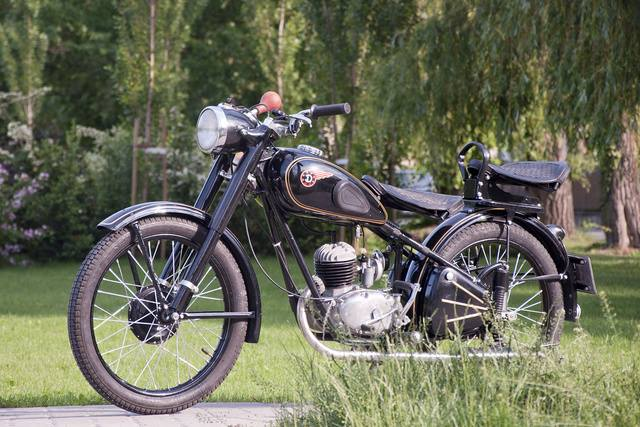
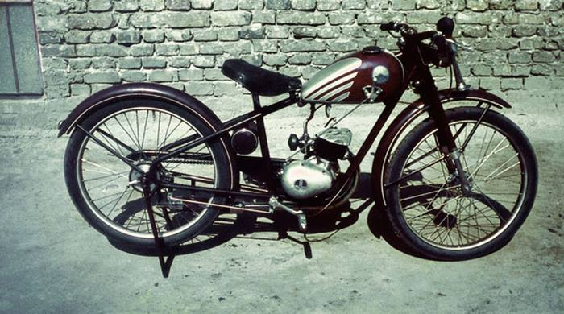
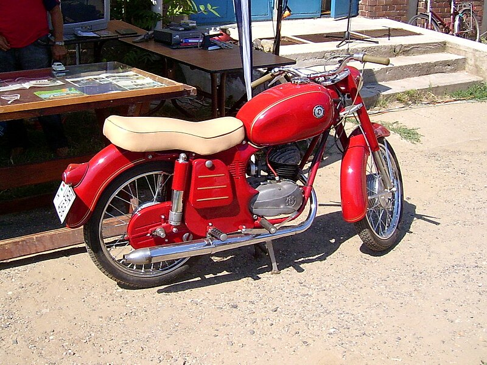
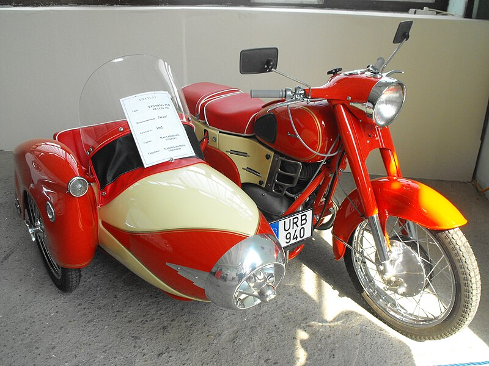
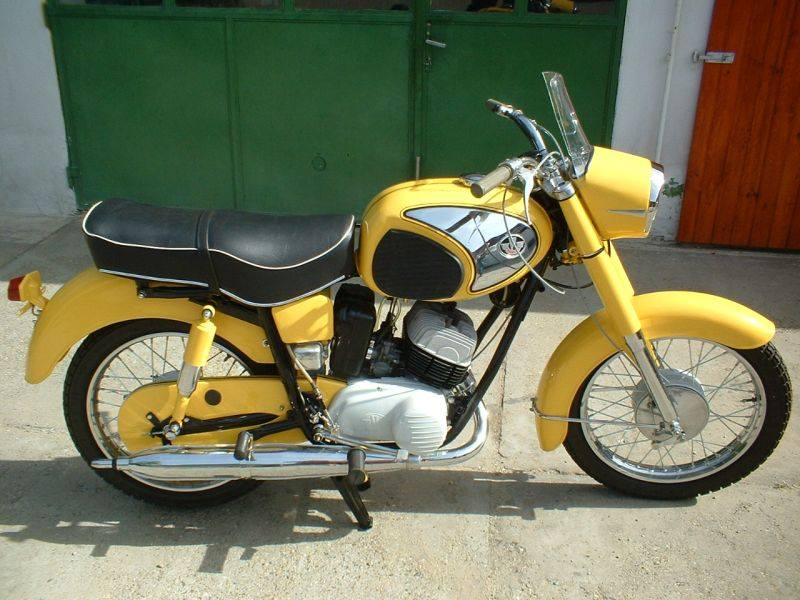

Magyar fejlesztésű motorkerékpárok
Az első magyar motorkerékpárt Bánki Donát készítette 1894-ben.
Az első belső égésű motor tervei (1900-ban) Csonka Jánosnak köszönhető,
és a járműveket a Ganz Gyárban gyártották le.
Sok magyar próbálkozott motorkerékpár építéssel.
Csak néhány: Dedics Ferenc, Hóra Nándor, Poszert Károly…
Az első nagy sikert a WM TURÁN,majd a CSEPEL hozta az 1930-as években.
A motorkerékpárok sikere a Méray testvérek nevéhez fűződik.
Az országban több motorgyártó is üzemelt:
Csepelen Pannóniákat,
Zuglóban Danuviákat,
Egerben Bervákat gyártottak.
A magyar motorkerékpár gyártás hőskora

Csepel 125
A D-Csepelek története egészen 1949-ig nyúlik vissza. Ugyanis ekkor kezdték el gyártani a Csepel
125-ös típust, amely 1949-től ’54-ig maradt gyártásban a Weiss Manfréd Acél- és Fémművekben
(1950-ben államosították a gyárat, új neve Rákosi Mátyás Vas- és Fémművek lett) A Csepel 125-ös
tervezése Jurek Aurél nevéhez fűződik.

Mátra
A Mátra Urbach László által, 1939 és 1949 között gyártott, -akkori- „kismotorkerékpárja” a magyar
motorkerékpár-ipar egyik, legnagyobb sikertörténete.
Legelőször 100 cm³-rel, majd a továbbiakban 123 cm³-rel is jött létre a márkából. A konstrukciókat
tökéletesítendő minden versenyen elindultak.

Danuvia DV 125
1958-tól beindult az időközben Danuvia DV 125 nevet kapott motorkerékpár nagy sorozatú gyártása és
forgalmazása. A D-Csepelnél korszerűbb formájú, nagyobb teljesítményű motor gyorsan népszerűvé vált.

Pannónia TLB
A Pannónia közvetlen elődjének a Csepel 250 típusú motorkerékpár tekinthető. Ezt 1950-ben kezdték el
gyártani, először ikerdugattyús motorral, majd később, 1951-től megjelent az egydugattyús változat.
Ennek motorblokkja külsőleg egyezett az első Pannónia-típus, a TL blokkjával, de belül már eltérések
voltak, főképp a láncos primerhajtás és a Pannónia hátrafelé forgó főtengelye miatt.

Pannónia P20
A Pannónia P20 képességeit a használati útmutató is előre jelzi: "Tudjuk, hogy Kedves Vevőnk azért választotta a
Pannónia P20 típusú motorkerékpárt, mert szeret 100 km-en felüli sebességgel motorozni, mert szeret
elsőnek indulni, ha a lámpa zöldet jelez,..., szereti ha előzés közben motorja egy kis gázadásra
"szárnyakat" kap."